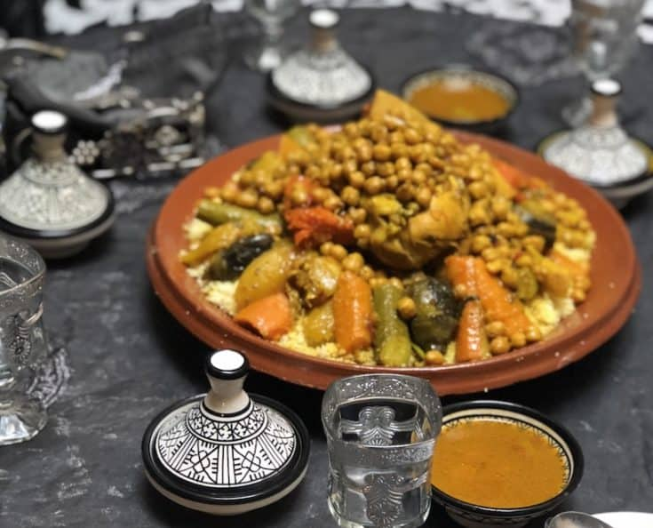

Couscous

This is a famous traditional Moroccan dish. Couscous is made of semolina, traditionally it is prepared by being steamed in a food steamer called a kiskas.
The base of the kiskas contains the meat and vegetables that are cooked as a stew and on the top it contains the steamer which absorbs the flavours from the stew.
The broth from the stew is then used to keep the couscous moist. This is a very delicious and healthy dish. Proper Moroccan couscous takes time to prepare but fortunately
we have a quick recipe to make your own.
Ingredients
- 1.25 cups couscous
- 4 tablespoons tablespoons olive oil
- 1 boneless, skinless chicken breast half
- 1 pinch kosher salt
- 1/2 cup diced yellow onion
- 1 cup chicken broth
- 1/4 cup diced zucchini
- 1/2 cup diced carrots
- 1/2 teaspoon ground turmeric
- 2 tablespoons of italian parsley
- 1/4 teaspoon of freshly ground black peppper
Steps
- Place couscous in a mixing bowl. Add salt, black pepper, olive oil. Stir with a spoon until all couscous is coated with oil.
- Season the chicken on both sides with salt.
- Heat olive oil in a saucepan over high heat. Add chicken and sear for 2 to 3 minutes on one side. Flip and add onions. Sear chicken on second side, while sauteing onions at the same side for 2 to 3 minutes.
- Remove chicken and let cool for a few minutes. Cut chicken into 1/2 inch cubes and return to the saucepan.
- Add chicken, broth, zucchini,carrots, and turmeric to the saucepan. Place over high heat. As soon as it boils, remove from the heat and carefully dump it on top of the couscous; do not stir. Wrap bowl tightly with aluminum foil and set a timer for 5 minutes
- When timer goes off, unwrap foil, and toss in parsley. Stir to combine ingredients. Taste and adjust for salt.
- Spoon couscous onto a serving plate and garnish with a drizzle of olive oil